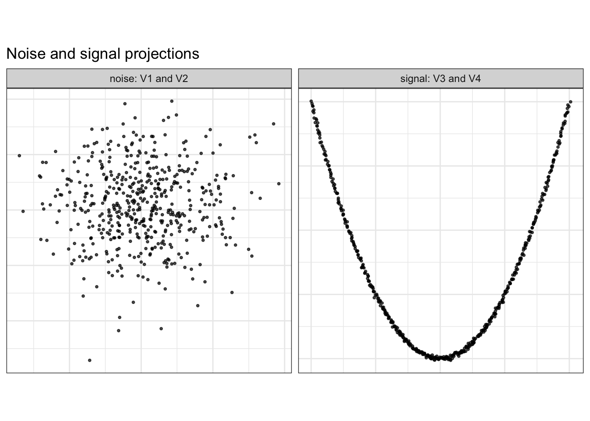
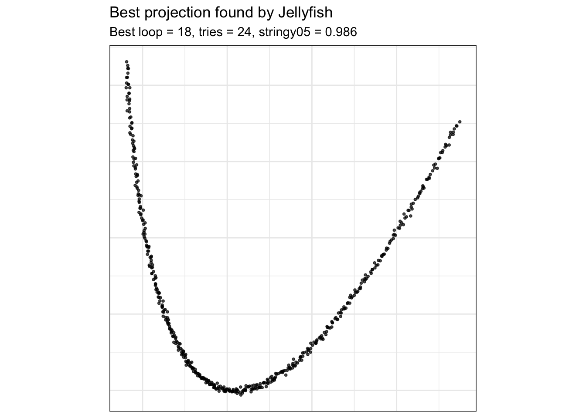
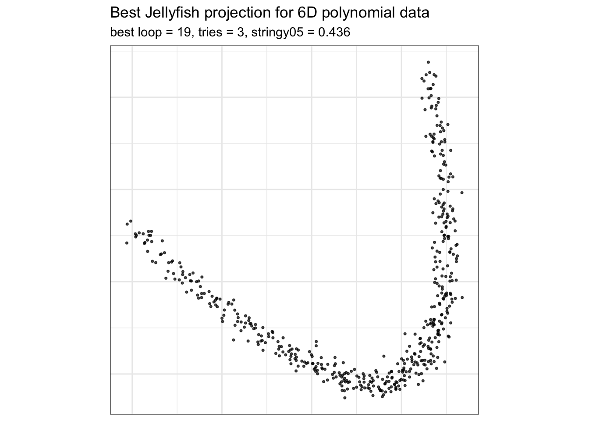
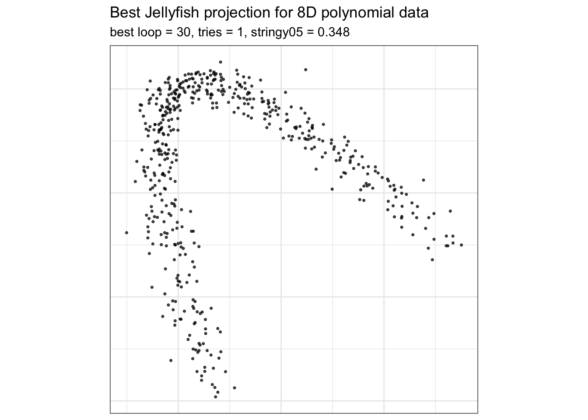

Code
library(tourr)
library(cassowaryr)
library(spinebil)
library(dplyr)
library(tidyr)
library(purrr)
library(ggplot2)
library(knitr)stringy05 index in a guided tour20 Jun 2026
The stringy05 scagnostic measures string-like or snake-like structure in a two-dimensional point cloud. Patterns receiving large values may include chains, curved paths, and polynomial or sine-wave-like relationships. This makes stringy05 a potential projection pursuit index for guiding a tour toward nonlinear structures hidden in high-dimensional data.
This vignette demonstrates how to:
stringy05 with several guided-tour optimizers; andThe examples use both the original index and a rescaled version that reduces values likely to arise from Gaussian noise.
The example dataset contains four variables. Variables V1 and V2 are Gaussian noise. Variables V3 and V4 contain the true structure.
A quadratic polynomial is used to create a clear string-like pattern:
V3 is a linear coordinate along the curve,V4 is a sinusoidal function of V3.The data are not standardized in this example so that the signal remains dominant relative to the noise variables. Standardizing all variables to unit variance would change this relative signal-to-noise magnitude and may alter the projection found by the optimizer.
set.seed(1050)
n <- 500
t <- seq(-2, 2, length.out = n)
poly_signal <- poly(t, degree = 2, raw = TRUE)
stringy4_raw <- data.frame(
V1 = rnorm(n, sd = 0.15),
V2 = rnorm(n, sd = 0.15),
V3 = poly_signal[, 1] + rnorm(n, sd = 0.01),
V4 = poly_signal[, 2] + rnorm(n, sd = 0.02)
)
stringy4 <- as.matrix(stringy4_raw)V3 and V4.V1 and V2.The signal and noise projections are shown side by side to define the target structure that the guided tour should recover.
plot_projection <- bind_rows(
tibble(
x = stringy4[, 1],
y = stringy4[, 2],
projection = "noise: V1 and V2"
),
tibble(
x = stringy4[, 3],
y = stringy4[, 4],
projection = "signal: V3 and V4"
)
)
ggplot(plot_projection, aes(x = x, y = y)) +
geom_point(size = 0.7, alpha = 0.7) +
facet_wrap(~ projection, nrow = 1, scales = "free") +
theme_bw() +
theme(
aspect.ratio = 1,
axis.text = element_blank(),
axis.ticks = element_blank()
) +
labs(
x = NULL,
y = NULL,
title = "Noise and signal projections"
)
The right panel contains the true stringy structure. The left panel contains only noise.
A grand tour rotates through many two-dimensional projections of the four-dimensional data. It provides an initial visual check that the hidden structure is present and visible from suitable projection angles before an index-guided search is applied.
The grand tour provides an unguided view of the projection space. The guided tour can then use stringy05 to search specifically for projections with string-like structure.
stringy05 as a projection pursuit indexTwo versions of the index are defined:
stringy05 index, andThe rescaled version uses the estimated Gaussian-noise threshold
\[ \ell(n) = 0.05 + \frac{3.86}{\sqrt{n}} \]
and maps values likely to arise from noise toward zero.
# Define the index
rescale_stringy05 <- function(z, n) {
lb <- 0.05 + 3.86 / sqrt(n)
pmax(0, (z - lb) / (1 - lb))
}
stringy05_raw <- function(rescale = FALSE) {
function(mat) {
z <- cassowaryr::sc_stringy05(mat[, 1], mat[, 2])
if (rescale) {
z <- rescale_stringy05(z, nrow(mat))
}
z
}
}
stringy05_index_raw <- stringy05_raw(rescale = FALSE)
stringy05_index_rescaled <- stringy05_raw(rescale = TRUE)stringy05 on the true structure and on noiseBefore optimization, the index is evaluated directly on the known signal and noise planes.
direct_check <- tibble(
projection = c("true structure: V3-V4", "noise: V1-V2"),
raw_stringy05 = c(
stringy05_index_raw(stringy4 %*% basis_true),
stringy05_index_raw(stringy4 %*% basis_noise)
),
rescaled_stringy05 = c(
stringy05_index_rescaled(stringy4 %*% basis_true),
stringy05_index_rescaled(stringy4 %*% basis_noise)
)
)
knitr::kable(
direct_check,
digits = 3,
caption = "Raw and rescaled stringy05 values for the true structured projection and a noise projection."
)| projection | raw_stringy05 | rescaled_stringy05 |
|---|---|---|
| true structure: V3-V4 | 0.997 | 0.996 |
| noise: V1-V2 | 0.207 | 0.000 |
The structured projection should receive a substantially larger value than the noise projection. In this example, the rescaling maps the noise value to zero while retaining a large value for the signal.
search_geodesicThe first guided tour uses the default optimizer, search_geodesic, with the rescaled stringy05 index.
search_geodesic tour interactivelyThe animation can be used to assess whether the guided tour moves toward the hidden polynomial structure in variables V3 and V4.
search_better_randomThe search_better_random optimizer provides a more exploratory alternative to the default geodesic search. This can be useful when a scagnostic index produces an irregular optimization surface or several local optima.
search_better_random tour as a gifComparing the two animations shows whether either optimizer recovers the polynomial structure more clearly or more consistently.
search_jellyfishThe Jellyfish optimizer starts from multiple candidate bases, so the returned object contains several search loops. Each loop represents one path through projection space.
Jellyfish is first applied to the four-dimensional polynomial dataset and the returned search history is saved.
The projection with the largest index value is selected across all Jellyfish loops and iterations.
The loop containing the maximum index value is extracted and replayed. The loop number is determined from the result rather than fixed in advance.
# A tibble: 1 × 8
basis index_val info method alpha tries loop id
<list> <dbl> <chr> <chr> <dbl> <dbl> <dbl> <int>
1 <dbl [4 × 2]> 0.986 current_best search_jellyfish NA 24 18 708Extract the best loop and its sequence of bases:
Only the loop containing the best projection is replayed.
The exact best basis can also be extracted and used to plot the corresponding projection directly.
best_basis <- best_jelly$basis[[1]]
best_projection <- as.data.frame(stringy4 %*% best_basis)
colnames(best_projection) <- c("x", "y")
ggplot(best_projection, aes(x = x, y = y)) +
geom_point(size = 0.7, alpha = 0.7) +
coord_equal() +
theme_bw() +
theme(
aspect.ratio = 1,
axis.text = element_blank(),
axis.ticks = element_blank()
) +
labs(
x = NULL,
y = NULL,
title = "Best projection found by Jellyfish",
subtitle = paste0(
"Best loop = ", best_loop,
", tries = ", best_jelly$tries,
", stringy05 = ", round(best_jelly$index_val, 3)
)
)
The maximum index value found by Jellyfish is:
Jellyfish can be useful for scagnostic indices because their optimization surfaces may be irregular or contain local optima. Exploring several candidate paths increases the opportunity to locate a projection with a large index value, although it does not guarantee recovery of the global optimum.
The number of noise variables is increased to examine whether Jellyfish can still recover the hidden polynomial structure. In each dataset, the final two variables contain the signal and all preceding variables contain Gaussian noise.
make_poly_data <- function(n = 500, p = 6, seed = 1050) {
set.seed(seed)
t <- seq(-2, 2, length.out = n)
poly_signal <- poly(t, degree = 2, raw = TRUE)
poly_data <- matrix(
rnorm(n * p, sd = 0.15),
nrow = n,
ncol = p
)
poly_data[, p - 1] <- poly_signal[, 1] + rnorm(n, sd = 0.01)
poly_data[, p] <- poly_signal[, 2] + rnorm(n, sd = 0.02)
colnames(poly_data) <- paste0("V", seq_len(p))
poly_data
}Generate the datasets:
Before running Jellyfish, the index is evaluated on the known signal and noise projections.
poly_direct_check <- tibble(
data = c("poly6", "poly8", "poly12"),
true_projection = c(
stringy05_index_rescaled(poly6 %*% basis6_true),
stringy05_index_rescaled(poly8 %*% basis8_true),
stringy05_index_rescaled(poly12 %*% basis12_true)
),
noise_projection = c(
stringy05_index_rescaled(poly6 %*% basis6_noise),
stringy05_index_rescaled(poly8 %*% basis8_noise),
stringy05_index_rescaled(poly12 %*% basis12_noise)
)
)
knitr::kable(poly_direct_check, digits = 3)| data | true_projection | noise_projection |
|---|---|---|
| poly6 | 0.973 | 0 |
| poly8 | 0.992 | 0 |
| poly12 | 0.985 | 0 |
A large value for the known signal projection confirms that the index recognizes the target structure. If the optimizer does not recover a comparable projection, the limitation is more likely related to search difficulty than to the index definition itself.
The same search procedure is applied to the six-, eight-, and twelve-dimensional datasets.
Read the saved results:
Summarize the best values:
best_poly_summary <- tibble(
data = c("poly6", "poly8", "poly12"),
best_loop = c(best_poly6$loop, best_poly8$loop, best_poly12$loop),
tries = c(best_poly6$tries, best_poly8$tries, best_poly12$tries),
max_index_val = c(best_poly6$index_val, best_poly8$index_val, best_poly12$index_val)
)
knitr::kable(best_poly_summary, digits = 3)| data | best_loop | tries | max_index_val |
|---|---|---|---|
| poly6 | 19 | 3 | 0.436 |
| poly8 | 30 | 1 | 0.348 |
| poly12 | 1 | 3 | 0.248 |
bases_poly6_best <- poly6_jelly |>
filter(loop == best_poly6$loop) |>
arrange(tries) |>
pull(basis) |>
check_dup(0.1)
bases_poly8_best <- poly8_jelly |>
filter(loop == best_poly8$loop) |>
arrange(tries) |>
pull(basis) |>
check_dup(0.1)
bases_poly12_best <- poly12_jelly |>
filter(loop == best_poly12$loop) |>
arrange(tries) |>
pull(basis) |>
check_dup(0.1)plot_best_proj <- function(data, best_row, title_text) {
best_basis <- best_row$basis[[1]]
proj <- as.data.frame(as.matrix(data) %*% best_basis)
colnames(proj) <- c("x", "y")
ggplot(proj, aes(x = x, y = y)) +
geom_point(size = 0.6, alpha = 0.7) +
coord_equal() +
theme_bw() +
theme(
aspect.ratio = 1,
axis.text = element_blank(),
axis.ticks = element_blank()
) +
labs(
x = NULL,
y = NULL,
title = title_text,
subtitle = paste0(
"best loop = ", best_row$loop,
", tries = ", best_row$tries,
", stringy05 = ", round(best_row$index_val, 3)
)
)
}

The stringy05 index assigns large values to the known polynomial projection and smaller values to a Gaussian-noise projection. The rescaled version further reduces index values that are likely to arise from noise, making it a practical choice for the guided-tour examples in this vignette.
The optimizer remains an important part of the analysis. search_geodesic, search_better_random, and search_jellyfish explore projection space differently and may therefore return different results. Jellyfish provides broader exploration through multiple search loops, but the higher-dimensional examples show that recovering a known optimum becomes more difficult as the projection space grows.
These examples also illustrate why scaling should be considered carefully. Standardization changes the relative magnitude of the signal and noise variables. Although scaling makes variables comparable in variance, it may weaken a deliberately dominant signal or amplify nuisance variation, changing both the index landscape and the projection selected by the optimizer.